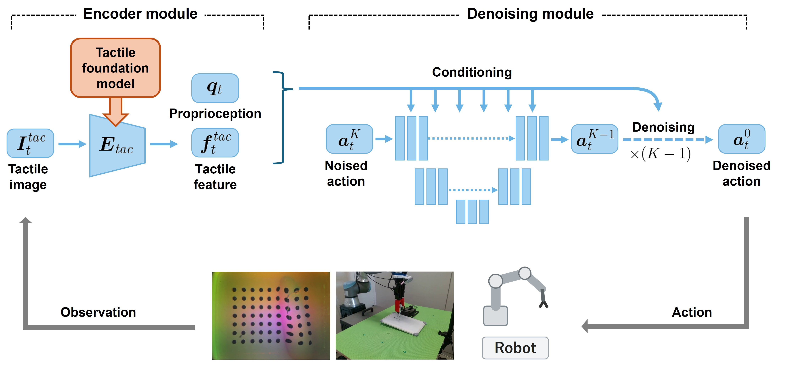
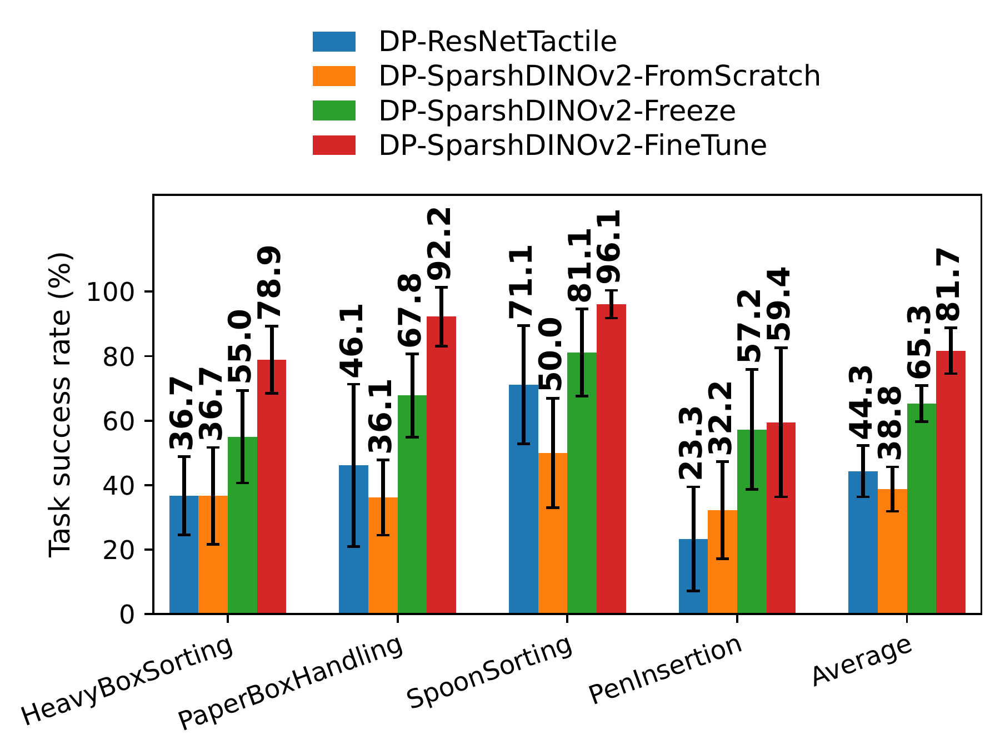
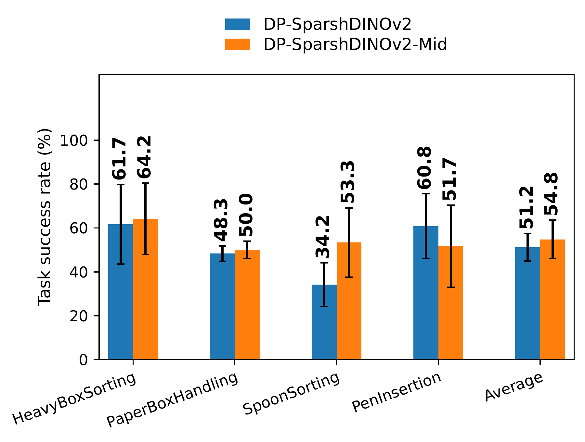

Compare representations
Compare four Sparsh variants, AnyTouch, T3, and UniT with camera and tactile ResNet-18 baselines. All tactile encoders produce 64-dimensional features.
1 Artificial Intelligence Research Center, National Institute of Advanced Industrial Science and Technology (AIST), Japan
2 CNRS-AIST JRL (Joint Robotics Laboratory), IRL, Japan
Tactile sensing plays an important role in imitation learning for contact-rich manipulation by providing direct observations of physical contact with objects. Recently, several tactile foundation models (TFMs) have been proposed to learn general-purpose tactile representations through pretraining on large-scale tactile datasets. However, how these pretrained tactile representations should be leveraged for end-to-end imitation learning remains insufficiently explored. In this work, we integrate multiple TFMs into Diffusion Policy and systematically evaluate their effectiveness for contact-rich manipulation under common experimental settings. We further investigate adaptation strategies, including encoder fine-tuning and task-specific mid-training, to understand how pretrained tactile representations can be effectively used for downstream imitation learning. Through extensive evaluation across diverse manipulation tasks in both real-world and simulation environments, including more than 5,000 real-world policy rollouts, we provide empirical insights into the use of TFMs for end-to-end imitation learning.
We compare tactile encoders and adaptation strategies within a common Diffusion Policy architecture.

Compare four Sparsh variants, AnyTouch, T3, and UniT with camera and tactile ResNet-18 baselines. All tactile encoders produce 64-dimensional features.
Compare training from scratch, freezing, and end-to-end fine-tuning with Sparsh DINOv2.
Adapt the encoder by predicting future tactile features from task demonstrations, using actions, a contrastive objective, and an EMA teacher.
32 demonstrations per task. Videos show the robot view and both tactile sensors.
A UR5e arm with a Robotiq 2F-140 gripper and GelSight Mini sensors on both fingers.
Draw two parallel lines on a whiteboard while maintaining contact.
Lift three visually identical boxes and place the weighted box into a basket.
Grasp and move a deformable paper container without crushing it.
Sort a spoon into the corresponding cup based on the grasped part.
Sort the spoon when grasped by its bowl.
Insert a ballpoint pen refill into a pen barrel.
A Sawyer arm with optical tactile sensing simulated using TACTO and PyBullet.
Insert a plate into a narrow slit.
Sort the spoon based on the grasped part.
Tactile input outperforms the camera baseline on average. Sparsh DINOv2 leads in the real world; T3 leads in simulation. Gains from pretraining vary by model and task.
| Policy | Real world | Simulation |
|---|---|---|
| DP-ResNetCamera | 39.6 | 32.9 |
| DP-ResNetTactile | 54.2 | 77.1 |
| DP-SparshMAE | 57.6 | 73.8 |
| DP-SparshDINO | 58.3 | 70.8 |
| DP-SparshDINOv2 | 67.4 | 85.0 |
| DP-SparshIJEPA | 56.9 | 65.0 |
| DP-AnyTouch | 47.9 | 82.1 |
| DP-T3 | 48.6 | 87.5 |
| DP-UniT | 50.7 | 81.7 |
Four real-world tasks and two simulation tasks; three seeds, with 12 and 20 rollouts per seed and task, respectively. Pretrained encoders are fine-tuned. Pen Insertion appears only in the adaptation experiments.
Across four real-world tasks, fine-tuning reaches 81.7% average success, compared with 65.3% for a frozen encoder and 38.8% for training from scratch.

Mid-training raises average success from 51.2% to 54.8%, improving three tasks but reducing performance on Pen Insertion.

Task objects differ between experiments, so compare success rates within each evaluation.
@misc{murooka2026tactile,
title = {Evaluating Tactile Foundation Models for End-to-End Imitation Learning in Contact-Rich Manipulation},
author = {Masaki Murooka and Ryoichi Nakajo and Tomohiro Motoda and Koshi Makihara and Hanbit Oh and Keisuke Shirai and Yukiyasu Domae},
year = {2026},
eprint = {2611.00957},
archivePrefix = {arXiv},
primaryClass = {cs.RO},
url = {https://arxiv.org/abs/2611.00957}
}